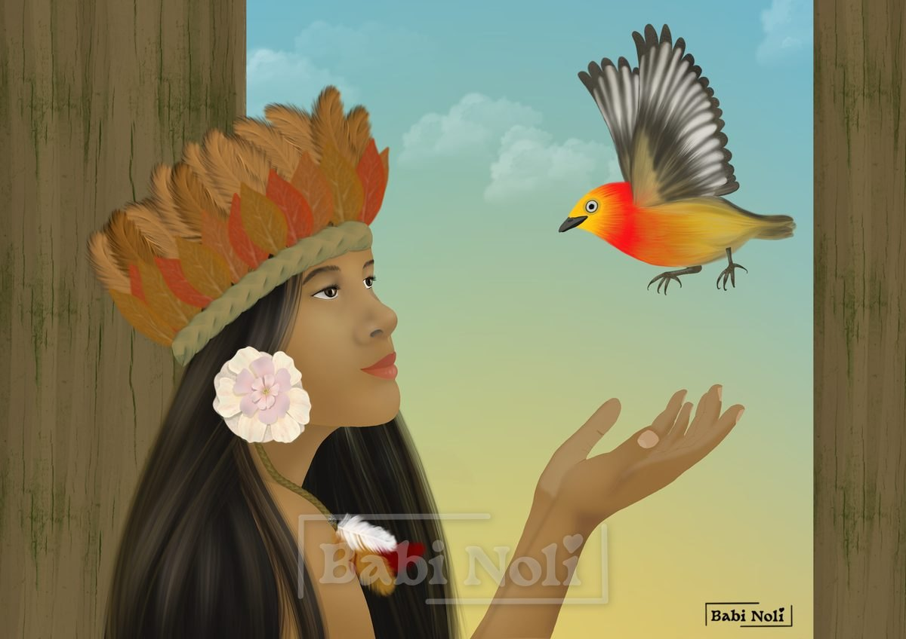
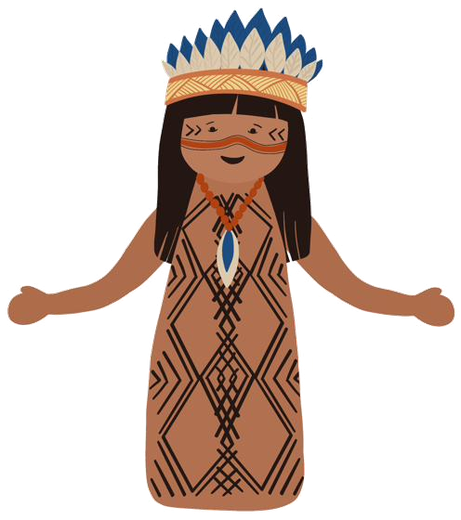

O Uirapuru


Segundo a lenda, o Uirapuru é um pássaro encantado. Seu canto traz sorte a quem o ouve, e há quem diga que ele também realiza desejos.
Mas de onde vem todo este encanto?
Existem algumas versões dessa história, mas a que mais me encanta é a do jovem guerreiro e flautista e seu amor pela bela moça prometida ao cacique.
Não sei se vocês também notaram aqui esse ar de amor proibido, estilo Romeu e Julieta.
O jovem era um moço alegre que saía pela floresta tocando, em sua flauta, músicas tão bonitas que até os pássaros paravam de cantar para ouvi-lo.
Um dia ele conheceu uma jovem que irradiava beleza, mas não era uma beleza comum: era um brilho que vinha de dentro. Eles se apaixonaram imediatamente.
Ele passou a frequentar os lugares aonde ela costumava ir. Ela passava horas ouvindo suas histórias e sua música, e o amor e a amizade nasceram entre eles de uma forma natural.
Porém, o que o nosso Romeu não sabia é que a jovem doce e encantadora pela qual ele tinha se apaixonado perdidamente era prometida a ninguém menos que o cacique da sua aldeia.
Caso vocês não saibam o que é um cacique: ele é o líder da aldeia, respeitado por todos.
Chegou aos ouvidos do cacique que as músicas e o músico estavam encantando sua prometida.
Ele juntou seus homens para dar uma lição no nosso flautista apaixonado.
Mesmo sendo um guerreiro, o flautista manejava melhor uma flauta do que um arco e flecha. Então despediu-se apressadamente de sua amada e fugiu pela floresta.
Apavorado, ele tocou sua música, atraindo para perto de si todos os pássaros e outros animais da floresta. Com lágrimas nos olhos e o coração partido, pediu aos espíritos da floresta que o ajudassem a continuar perto de sua amada.
De repente, um clarão se fez e a floresta se iluminou. Seu pedido tinha sido atendido: ele foi transformado em um pássaro belíssimo, de cores fortes e canto inconfundível.
Dessa forma, ele pôde ficar perto de sua amada. Todos os dias, pela manhã, ele vinha visitá-la cantando. Ela sabia que era ele, pois ele cantava a mesma música que cantava a ela tantas e tantas vezes.
Vocês devem estar se perguntando o que aconteceu com o cacique. Dizem por aí que ele entrou floresta adentro procurando o flautista e nunca mais foi visto. Há ainda os que dizem que foi castigo do Curupira. Mas isso é tema pra outras lendas.
Curiosidades
O uirapuru existe de verdade. É o uirapuru-da-guiana, um pequeno pássaro da Amazônia da família das corruíras, famoso por ter um dos cantos mais bonitos da floresta. O nome vem do tupi wirapu'ru.
As versões da lenda não concordam sobre as cores do pássaro encantado: algumas o descrevem vermelho e amarelo, com asas pretas; outras, castanho-avermelhado, de asas mais escuras.
O canto do uirapuru também virou música erudita. O compositor brasileiro Heitor Villa-Lobos começou a compor em 1917 a obra “Uirapuru — O passarinho encantado”, um balé inspirado no pássaro e na sua lenda.